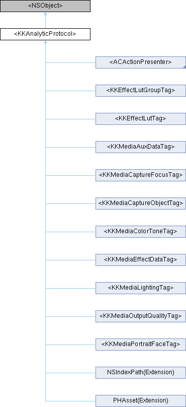

Shine
Loading...
Searching...
No Matches
Instance Methods
|
List of all members
<KKAnalyticProtocol> Protocol Reference
Inheritance diagram for <KKAnalyticProtocol>:

Instance Methods
(nullable NSDictionary *)
-
metadataInfo
用来分析资源的字典
(NSDictionary *)
-
metadataInfoFromTagKey:propertyNames:
Method Documentation
◆
metadataInfoFromTagKey:propertyNames:
- (NSDictionary *) metadataInfoFromTagKey:
(NSString *)
key
propertyNames:
(NSArray *)
propertyNames
optional
将一组标签属性转换为metadataInfo 一组标签中必须只有一个数值为true
The documentation for this protocol was generated from the following file:
Shine/Shine/Sections/ImportMediaSection/Protocol/
KKAnalyticProtocol.h
Generated by
1.9.8